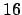
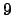
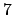
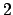
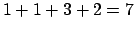

Avant d'aborder les fractions continues d'un point de vue plus formel, considérons, en guise de mise en bouche, le petit problème géométrique suivant.
Comment diviser le rectangle suivant dont la longueur est de  unités et la largeur est de  unités en un nombre exact de carrés non tous égaux au carré unité ?
A première vue, il n'est pas clair que ce problème ait un quelconque rapport avec les fractions continues; pourtant nous allons constater que le simple fait de résoudre ce problème d'une manière tout à fait naturelle met en évidence des fractions continues.
Commençons par faire apparaître un premier carré de côté unités.
Nous pouvons traduire cela algébriquement par
Cela ne nous avance guère, mais si nous prolongeons ce raisonnement, nous constatons alors que nous pouvons diviser le rectangle de longueur unités et de largeur  unités en un carré de côté unités et un rectangle de longueur unités et de largeur  unités.
Ce qu'ici encore nous pouvons écrire par
En continuant ce processus, on obtient finalement un nombre exact de carrés, à savoir  carrés, qui divisent notre rectangle de départ. Ce qui constitue bien entendu une solution au problème.
Algébriquement cela s'interprète par
Cependant ce problème avec les dimensions proposées n'est nullement un cas particulier, en fait il est possible de refaire le même raisonnement pour tout rectangle de dimensions entières1.